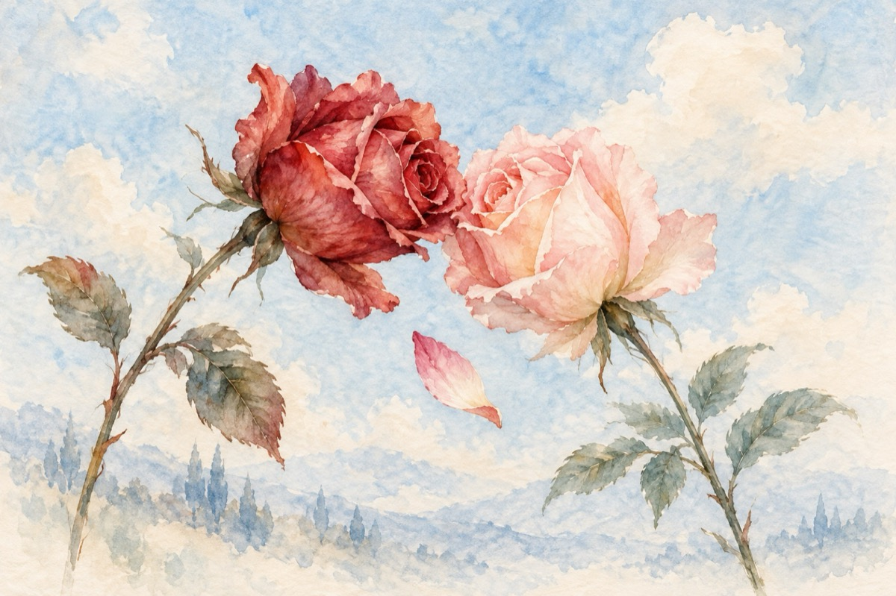

De la flori am învățat
Un trandafir tomnatic cochetează
Cu o prințesă trandafiră rază
Și îi trimite pe-o petală un mesaj
Să se-ntâlnească într-un alt peisaj.
Parfumul ei misterios ce l-a cuprins
L-a fermecat, trufia i-a învins
Și-ngenuncheat la a sa tulpină
O recunoaște ca pe făptura cea divină.
Petalele învălmășite s-au zbătut
Și-n plină zi s-a-nfiripat primul sărut
Și-n toată lumea trandafiră s-a zvonit
Că trandafirul cel tomnatic cu trandafirul rază
S-au unit!...
Morala
De la flori am învățat
Să ne iubim
Și din parfumul lor ne-am înfruptat
În armonie să trăim!...
Vasile Groza